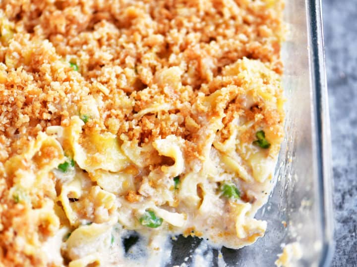

Tuna Noodle

Description
This tuna noodle casserole is the best with a classic creamy taste from my childhood.
The sauce is rich and creamy but not overwhelmingly heavy.
The crunch from the topping and fresh bite from the parsley create the perfect balance.
Let's not forget that this is a great budget-friendly meal to feed a crowd!
Ingredients
- 1 (12 ounce) package egg noodles
- 4 1/4 teaspoons kosher salt, divided
- 4 tablespoons salted butter, divided
- 5 teaspoons olive oil, divided
- 1 (8 ounce) package sliced fresh mushrooms
- 1 small white onion, minced
- 1/4 cup all-purpose flour
- 2 cups milk
- 1 1/2 cups chicken stock
- 2 tablespoons lemon juice
- 1 teasppon Dijon mustard
- 1/2 teaspoon ground black pepper
- 1 1/2 cups shredded white cheddar cheese
- 1 cup frozen sweet peas
- 2 (6 ounce) cans tuna, drained
- 1 cup panko bread crumbs
- 1/4 teaspoon ground paprika
- 2 tablespoons finely chopped fresh parsley